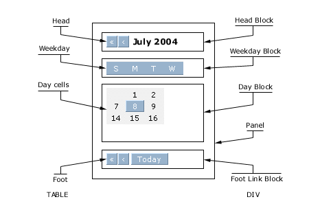

Xin Calendar 2 Step-by-step: The blocks of a calendar
|  |
Let's take a look at the diagram to the right.
Xin Calendar 2 builds a calendar inside a table which has only one cell to hold the panel and inside the panel there are four blocks: the head block, the weekday block, the day block and the foot link block.
The panel and these blocks are all DIV elements. Inside these four blocks are another four tables: the head table, the weekday table, the day cell table and the foot table.
Depending on the setting, the month/year scrolling arrows can sit either in the head block or in the foot link block.
If the scrolling arrows are in the head block, the head table will have a center cell to hold the month/year title and some outer cells on both sides to hold the scrolling arrows, otherwise, the head table will only have the month/year title cell.
The weekday table has seven cells to hold the weekdays, and the day cell table has 7 X 6 cells to hold the days.
The foot table has one cell for each foot link that is switched on, plus some outer cells on both sides to hold the scrolling arrows if it's defined so.
Inside all these table cells are the DIV elements that really hold the text for the calendar.
When we define the CSS settings for calendar styles, we are actually defining CSS settings for all these DIV elements, including the panel and its four blocks, and each DIV element inside the table cells.
As you might be aware of that, since the scrolling arrows, the month/year title, the week days and days, and the foot links are in their own cells, the CSS margin settings would apply to them only when the margin is positive. Negative margins can be applied to the blocks though.
The CSS settings won't apply to the tables and table cells, they are just used to put things in position. There is one variable, the [ xcGridWidth ], in the config file though to set the cellspacing value for the weekday table and day cell table so that the background color of the weekday block and day block can see through to make some grid effects.
Please use the CSS descendant selectors with care as "DIV TABLE" will pick up the tables inside the DIV blocks, but you can think that a way to hack the calendar if you like.
The next step shows what CSS each DIV element accepts.
[Set up the layout and styles] [Back to index page]
# # #